set.seed(123)
# Simular pacientes con imc y glicemia
datos_sim <- tibble(
imc = rnorm(200, mean = 28, sd = 5),
glicemia = 80 + imc * 1.5 + rnorm(200, 0, 10)
)4.- Visualización para Entender Datos
1. Intuición (SIN código)
Antes de hacer cualquier modelo, incluso antes de pensar en Bayes, hay una pregunta más básica:
👉 ¿Qué dicen realmente los datos?
La visualización es la forma más directa de responderla.
Un ejemplo clínico
Imagina que tienes 1,000 pacientes y quieres entender el IMC.
Te doy dos opciones:
- Opción A: una tabla con 1,000 números
- Opción B: un gráfico donde ves cómo se distribuyen esos valores
¿Cuál te permite entender mejor?
👉 El gráfico.
Ver datos vs entender datos
- Ver datos: mirar filas y columnas
- Entender datos: detectar patrones, extremos, relaciones
La visualización transforma números en intuición clínica.
¿Por qué visualizar antes de modelar?
Porque los modelos (incluyendo los bayesianos) hacen supuestos.
Pero los datos reales:
- no son simétricos
- tienen valores extremos
- tienen ruido
- pueden tener subgrupos ocultos
👉 Si no los visualizas primero, puedes construir modelos equivocados.
Qué buscamos al visualizar
Cuando miras un gráfico clínico, estás buscando:
1. Distribución
¿Cómo se comporta una variable?
Ejemplo:
- IMC concentrado en 25–30 → sobrepeso predominante
- cola larga → obesidad severa presente
2. Heterogeneidad
¿Todos los pacientes son similares?
Ejemplo:
- glicemia muy dispersa → metabolismo variable
3. Valores extremos
Pacientes fuera de lo común
Ejemplo:
- glicemia > 200 mg/dL → posible diabetes no controlada
4. Relaciones entre variables
¿Cómo se conectan?
Ejemplo:
- IMC ↑ → glicemia ↑ 👉 posible relación metabólica
Idea clave del capítulo
Visualizar es pensar clínicamente con datos antes de hacer estadística.
2. Ejemplo simple (simulación en R)
Vamos a construir intuición desde cero.
Simulamos pacientes con IMC y glicemia.
1. Distribución de IMC
# Histograma de la variable imc
ggplot(datos_sim, aes(x = imc)) +
geom_histogram(bins = 30)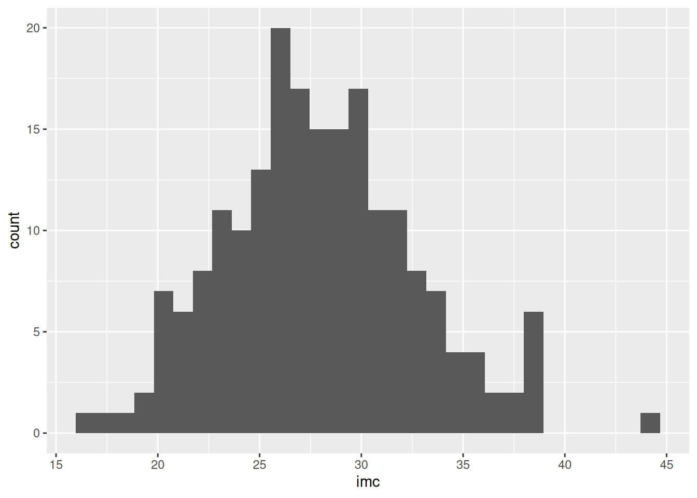
👉 ¿Qué estás viendo?
- La mayoría entre 25–30
- Algunos valores altos → obesidad
2. Relación IMC vs glicemia
# Diagrama de dispersión que relaciona el imc con la glicemia
ggplot(datos_sim, aes(x = imc, y = glicemia)) +
geom_point()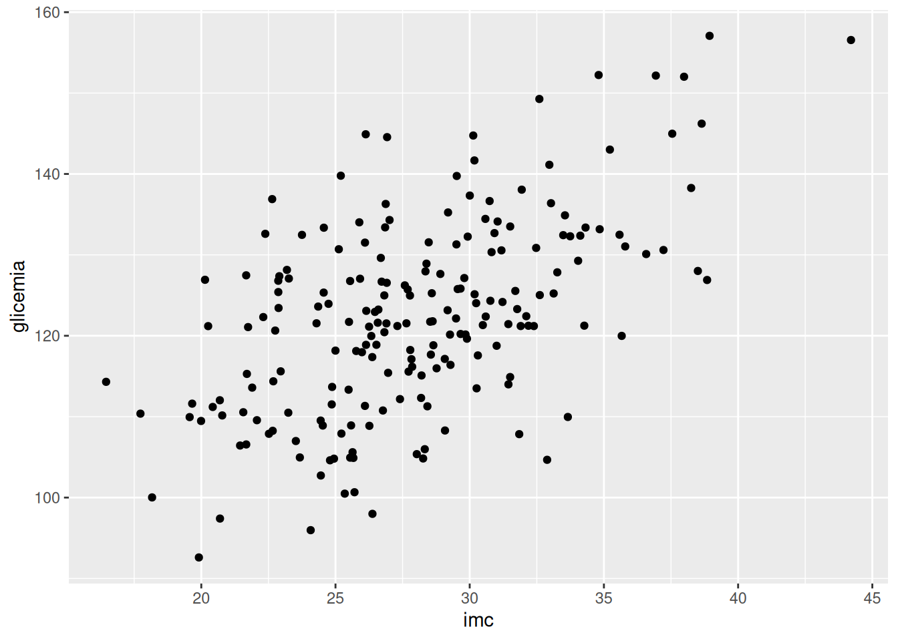
👉 Aquí aparece algo clave:
- A mayor IMC → mayor glicemia
- No es perfecto → hay variabilidad
3. Ejemplo aplicado con NHANES
Ahora trabajamos con datos reales.
Supongamos que ya tienes un dataset limpio llamado nhanes_sub.
0. Selccionar los datos
# Seleccionar las variables importantes
df_obesidad_sub <- df_obesidad %>%
select(
RIDAGEYR, # edad
RIAGENDR, # sexo
BMXBMI, # IMC
LBXSGL, # glicemia
BPXSY_mean, # presión sistólica
BPXDI_mean, # presión diastólica
RXD530, # dosis de aspirina
PAD680 # sedentarismo
)1. Distribución del IMC
# Histograma del índice de masa corporal
ggplot(df_obesidad_sub, aes(x = BMXBMI)) +
geom_histogram(bins = 30) +
labs(
title = "Distribución del IMC",
x = "IMC",
y = "Frecuencia"
)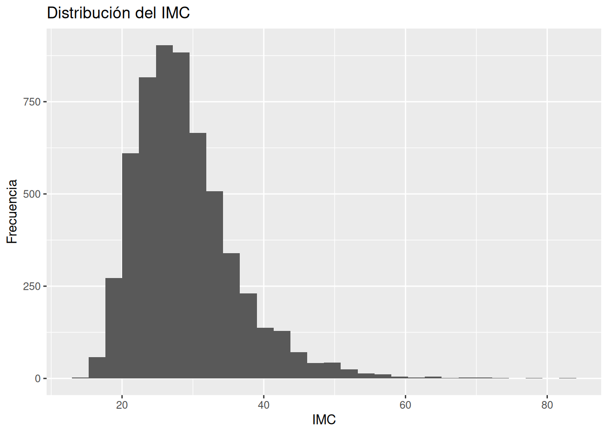
Interpretación
Aquí normalmente verás:
- Pico en sobrepeso (25–30)
- Cola hacia obesidad
- Pocos con IMC bajo
👉 Esto ya te dice:
La población no es homogénea Hay una carga importante de obesidad
2. Glicemia (variabilidad metabólica)
# Histograma de la variable de glicemia
ggplot(df_obesidad_sub, aes(x = LBXSGL)) +
geom_histogram(bins = 30) +
labs(
title = "Distribución de glicemia",
x = "Glicemia (mg/dL)",
y = "Frecuencia"
)Warning: Removed 286 rows containing non-finite outside the scale range
(`stat_bin()`).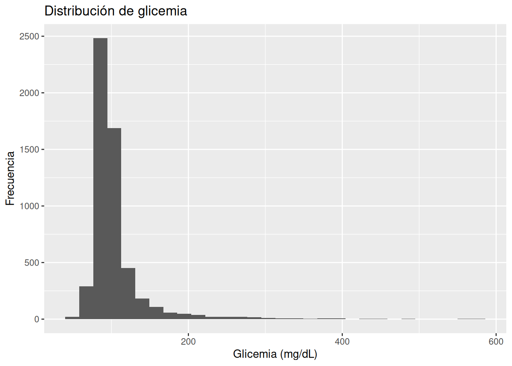
Qué observar
- ¿Está concentrada o dispersa?
- ¿Hay valores altos?
- ¿Hay cola derecha?
👉 Esto refleja:
- regulación metabólica
- posible resistencia a la insulina
3. IMC vs glicemia
# Diagrama de dispersión que relaciona el índice de masa corporal con
# la glicemia
ggplot(df_obesidad_sub, aes(x = BMXBMI, y = LBXSGL)) +
geom_point(alpha = 0.1) +
labs(
title = "IMC vs Glicemia",
x = "IMC",
y = "Glicemia"
)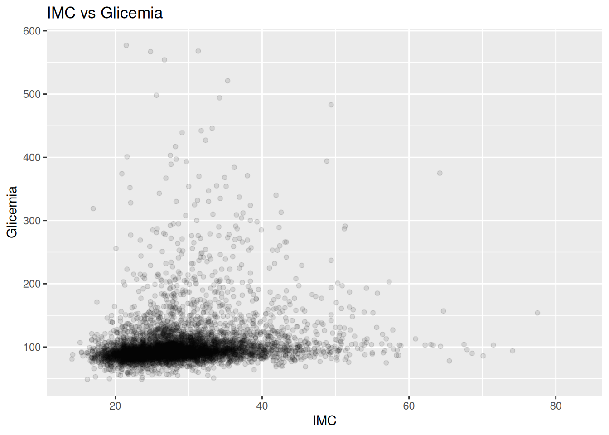
Qué buscar - tendencia ascendente - dispersión - puntos extremos
👉 Este gráfico es oro clínico.
4. Actividad física (sedentarismo)
# Histograma de minutos de sedentarismo
ggplot(df_obesidad_sub, aes(x = PAD680)) +
geom_histogram(bins = 100) +
labs(
title = "Minutos sedentarios",
x = "Minutos sedentarios",
y = "Frecuencia"
)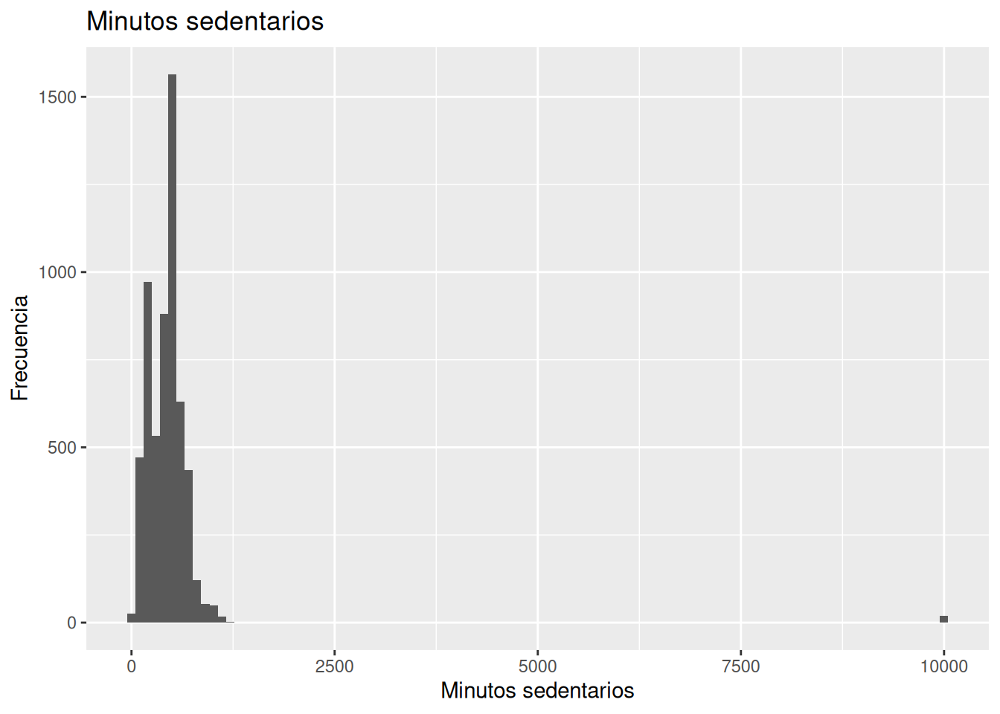
Interpretación
- muchos pacientes con alto sedentarismo
- posible relación con obesidad
5. Boxplot: IMC por sexo
# Pasar a factor la variable de género
df_obesidad_sub <- df_obesidad_sub %>%
mutate(
RIAGENDR = case_when(
RIAGENDR == 1 ~ "male",
RIAGENDR == 2 ~ "female",
TRUE ~ NA_character_
),
RIAGENDR = as.factor(RIAGENDR)
)
# Gráfico de caja que relaciona el género con el índce de masa
# corporal
ggplot(df_obesidad_sub, aes(x = RIAGENDR, y = BMXBMI)) +
geom_boxplot() +
labs(
title = "IMC por sexo",
x = "Sexo",
y = "IMC"
)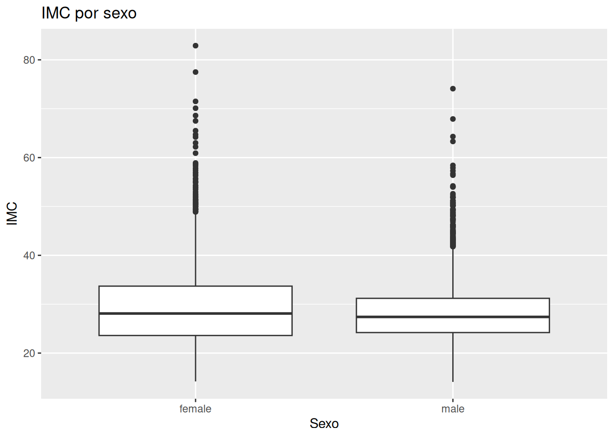
Qué aporta este gráfico
El boxplot te muestra:
- mediana
- dispersión
- valores extremos
👉 Es una forma compacta de comparar grupos.
Mini introducción a ggplot2
Todos los gráficos siguen la misma lógica:
#ggplot(data, aes(x = ..., y = ...)) +
# geom_...Componentes:
- data → dataset
- aes() → qué variables usar
- geom_ → tipo de gráfico
Ejemplos:
- geom_histogram() → distribución
- geom_point() → relación
- geom_boxplot() → comparación
4. Interpretación clínica
Ahora viene lo más importante.
Lo que los gráficos realmente te dicen
Después de visualizar NHANES, deberías poder decir:
1. La obesidad no es uniforme
- Hay pacientes con IMC normal
- Otros con obesidad severa
👉 No existe “el paciente promedio”
2. El metabolismo es variable
- glicemias normales
- prediabetes
- valores altos
👉 La resistencia a la insulina no es binaria
3. El estilo de vida importa
- alto sedentarismo
- gran variabilidad
👉 Esto conecta con inflamación crónica
4. Las relaciones existen (pero no son perfectas)
IMC vs glicemia:
- tendencia positiva
- mucha dispersión
👉 Esto es clave:
No todos los pacientes con obesidad tienen la misma glicemia → heterogeneidad metabólica
Conexión con pensamiento bayesiano
Aquí empieza Bayes, aunque no lo veas aún.
Cuando observas estos gráficos, tu mente empieza a pensar:
- “Creo que mayor IMC aumenta la glicemia…”
- “Pero no siempre…”
- “Hay incertidumbre…”
👉 Eso es una creencia probabilística
Mensaje final del capítulo
Antes de modelar, antes de hacer inferencia, antes de hablar de Bayes:
Mira los datos.
Porque:
👉 Los datos no son limpios 👉 No son uniformes 👉 No siguen reglas perfectas
Pero sí cuentan una historia.
Ejercicios
Ejercicio 1
Grafica la distribución de edad (RIDAGEYR)
- ¿Es homogénea?
Ejercicio 2
Haz un scatter (diagrama de dispersión + línea suvizada) de edad vs IMC
- ¿ves relación?
Ejercicio 3
Filtra solo pacientes con IMC > 30
- ¿cómo cambia la glicemia?
Ejercicio 4
Divide por sexo y compara glicemia (boxplot)
Ejercicio 5
Busca valores extremos en glicemia
- ¿qué tan frecuentes son?
Ejercicio 6
Ver glicemia por categorías de IMC
df_obesidad_sub %>%
mutate(
categoria_imc = case_when(
BMXBMI < 25 ~ "normal",
BMXBMI < 30 ~ "sobrepeso",
TRUE ~ "obesidad"
)
) %>%
ggplot(aes(x = categoria_imc, y = LBXSGL)) +
geom_boxplot()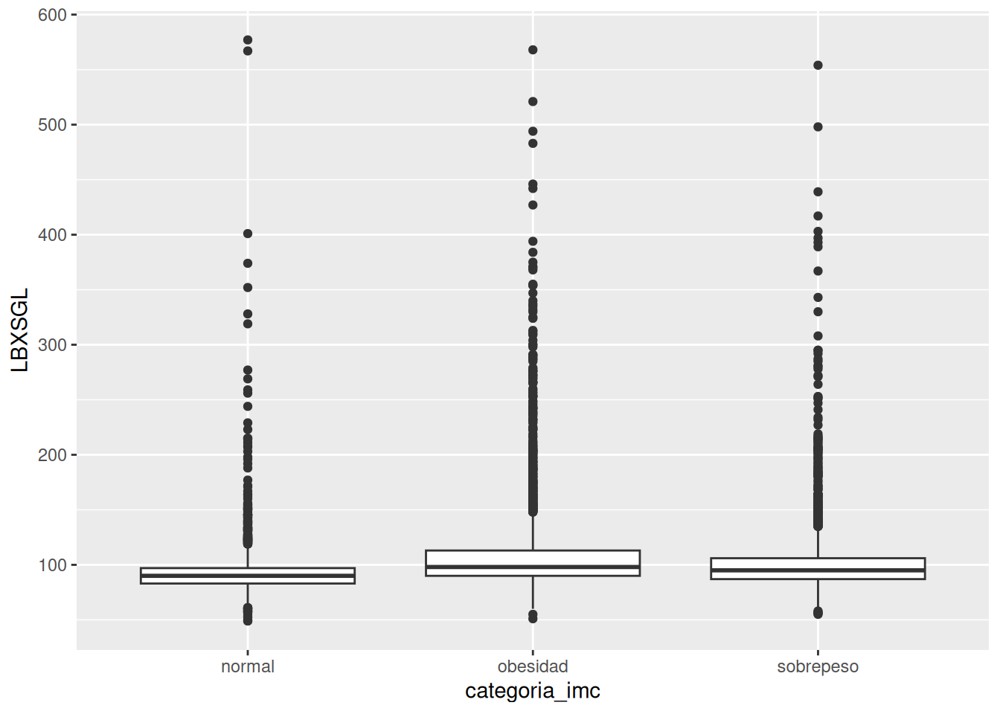
👉 ¿Realmente cambia la glicemia entre grupos?
Ejercicio 7
Scatter con suavizado (clave)
ggplot(df_obesidad_sub, aes(x = BMXBMI, y = LBXSGL)) +
geom_point(alpha = 0.1) +
geom_smooth()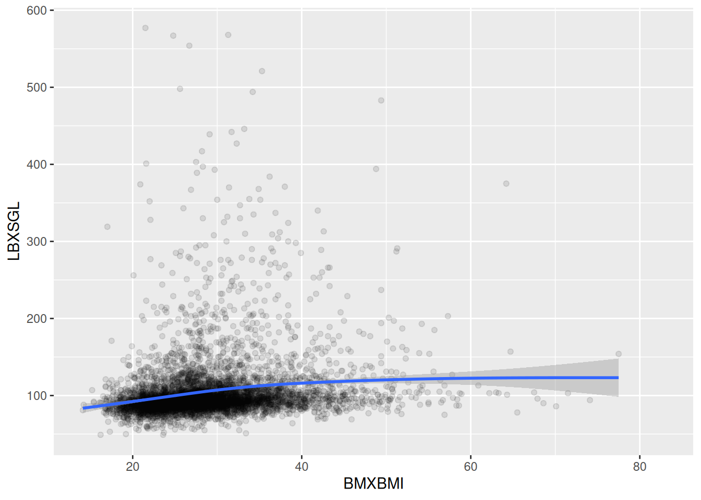
👉 Esto revela tendencias débiles
Ejercicio 8
Distribución de IMC solo en glicemia alta
df_obesidad_sub %>%
filter(LBXSGL > 110) %>%
ggplot(aes(x = BMXBMI)) +
geom_histogram(bins = 30)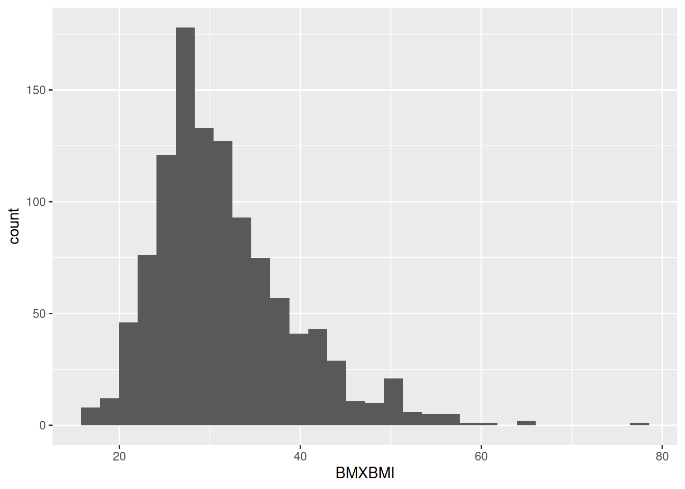
👉 ¿predomina obesidad?
Ejercicio 9
Edad vs glicemia
ggplot(df_obesidad_sub, aes(x = RIDAGEYR, y = LBXSGL)) +
geom_point(alpha = 0.3) +
geom_smooth()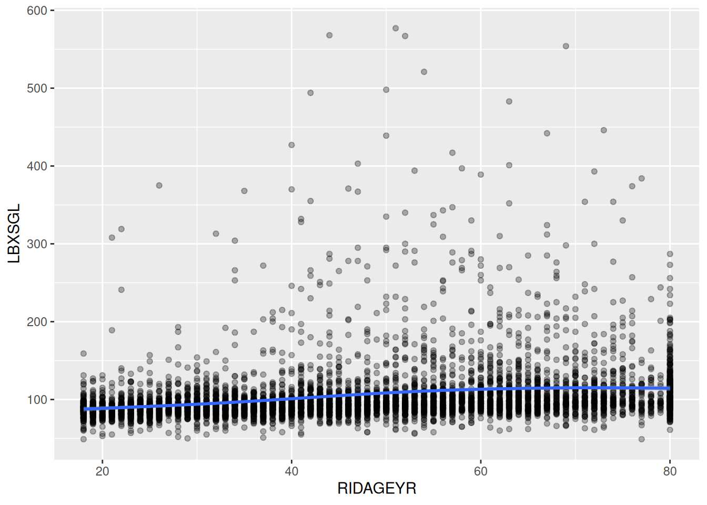
👉 ¿la glicemia aumenta con edad?
Ejercicio 10
Sedentarismo vs IMC
ggplot(df_obesidad_sub, aes(x = PAD680, y = BMXBMI)) +
geom_point(alpha = 0.3) +
geom_smooth()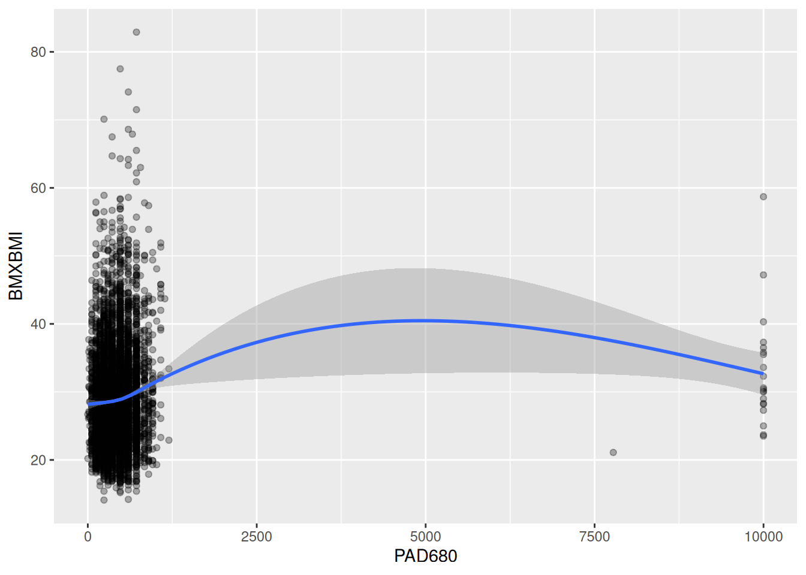
👉 ¿más sedentarismo → más IMC?